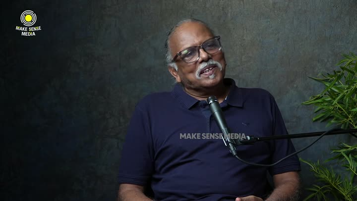
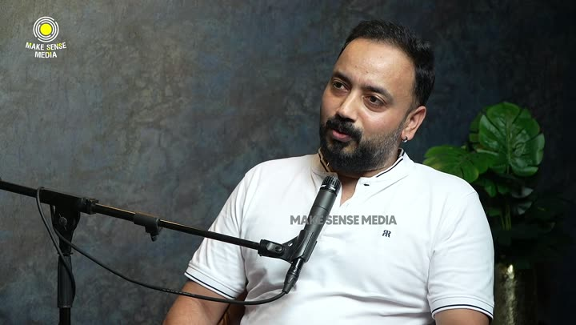
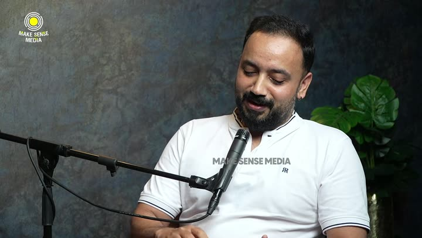
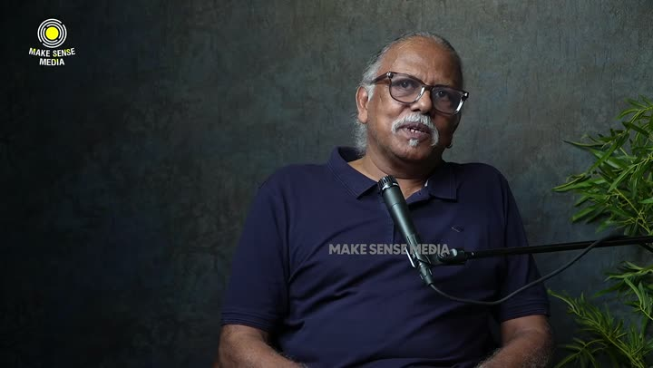
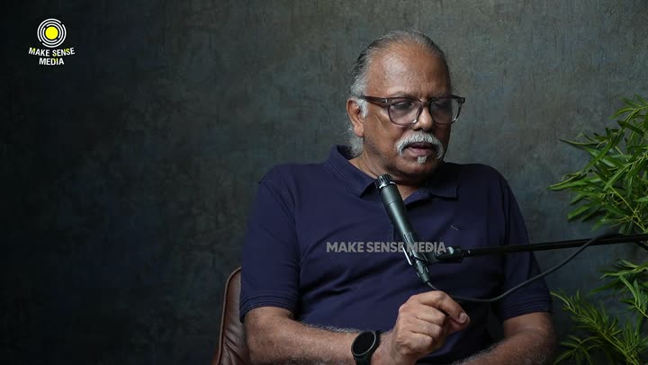
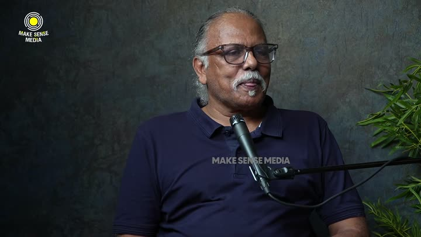
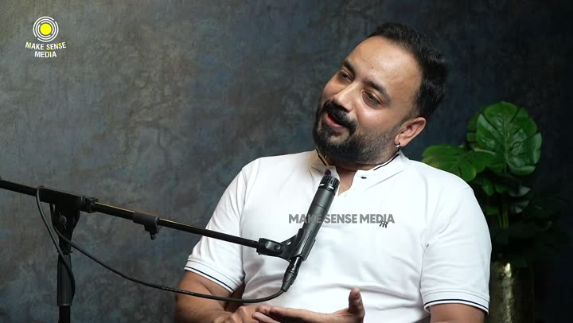

![Kaipps Cafe]()
Authored by Kaipp's AI Repo© 2026 Nishad Kaippally (Kaipps Cafe). All rights reserved.
This report was built with several private and public AI models. It is educational material: not for sale, and not to be reused or republished, including on any YouTube channel, without explicit permission.
മൈത്രേയൻ x പ്രവീൺ രവി: തെളിവിന്റെ അളവുകോൽ വെച്ച് ഒരു പരിശോധന
ഇതൊരു theist debate (മതവിശ്വാസിയുമായുള്ള സംവാദം) അല്ല, രാഷ്ട്രീയ അഭിമുഖമാണ്. അതുകൊണ്ട് യുക്തിവാദത്തിന്റെ അളവുകോൽ രണ്ടുപേർക്കും ഒരുപോലെ വെച്ചാണ് ഈ പരിശോധന.

ഈ വീഡിയോയിൽ മതപക്ഷം ഇല്ല. യുക്തിവാദി Mytreyan-നോട് interviewer (അഭിമുഖകാരൻ) Praveen ഇറാൻ, EVM, ഭീകരവാദം, കർഷക ബില്ല് എന്നീ വിഷയങ്ങളിൽ കടുത്ത ചോദ്യങ്ങൾ ചോദിക്കുന്നു.
Mytreyan-ന് യഥാർത്ഥ പോയിന്റുകൾ ഉണ്ടായിരുന്നു: 2023-ലെ CEC നിയമം, രാജ്യസഭയിലെ voice vote (ശബ്ദവോട്ട്), ചൈനയിലെ നിർബന്ധിത technology transfer (സാങ്കേതിക കൈമാറ്റം).
പക്ഷേ 'ഇറാനിലാണ് കൂടുതൽ ജനാധിപത്യം' (00:48:06), 'അമേരിക്കയിൽ 50% വിസക്കാർ' (00:48:26) തുടങ്ങിയ തെറ്റായ അവകാശവാദങ്ങളും, മതവാദികൾ ഉപയോഗിക്കുന്ന അതേ self-sealing (സ്വയം അടച്ചുപൂട്ടുന്ന) ന്യായവാദവും അദ്ദേഹത്തിന്റെ വിശ്വാസ്യത കുറച്ചു.
ചോദ്യങ്ങളുടെ കാര്യത്തിൽ Praveen ആണ് മുന്നിൽ നിന്നത്: ഒഴിഞ്ഞുമാറലുകൾ കൃത്യമായി പിടിച്ചു. എങ്കിലും കർഷക ബില്ലിലും ചൈനയിലും അദ്ദേഹവും വസ്തുതകൾ തെറ്റിച്ചു.
1. ഇറാൻ vs അമേരിക്ക: ഏറ്റവും ദുർബലമായ ഭാഗം
ഈ ഭാഗത്ത് ചോദ്യം ലളിതമായിരുന്നു. പക്ഷേ ഒരിക്കൽ പോലും നേരിട്ടുള്ള ഉത്തരം വന്നില്ല.
'ഇറാൻ ജനങ്ങളെ അടിച്ചമർത്തുന്നുണ്ടോ?' — ഉത്തരം അമേരിക്ക

ചോദ്യം ഇറാനെക്കുറിച്ചായിരുന്നു. ഉത്തരം 'അമേരിക്ക അത്രയും തന്നെ ചെയ്യുന്നുണ്ട്', 'prison (ജയിൽ) ഏറ്റവും കൂടുതൽ അമേരിക്കയിൽ' എന്നിങ്ങനെയായിരുന്നു. തടവുകാരുടെ കണക്ക് ശരിയാണ്. പക്ഷേ ഇത് tu quoque / whataboutism ആണ്: B-യുടെ തെറ്റ് A-യെ കുറ്റവിമുക്തമാക്കില്ല. Praveen തന്നെ
00:46:12-ൽ പറഞ്ഞതുപോലെ, 'clarity (വ്യക്തത) വന്നിട്ടില്ല'.
'ഇറാനാണ് കൂടുതൽ ജനാധിപത്യം, definitely yes'

EIU Democracy Index ഇറാനെ 'Authoritarian' ആയും അമേരിക്കയെ 'Flawed democracy' ആയുമാണ് തരംതിരിക്കുന്നത്. V-Dem, Freedom House എന്നിവയും ഇതേ ചിത്രമാണ് നൽകുന്നത്. ഇറാനിൽ സ്ഥാനാർത്ഥികളെ Guardian Council മുൻകൂട്ടി വെട്ടുന്നു; Supreme Leader-നെ (പരമോന്നത നേതാവിനെ) ജനം തിരഞ്ഞെടുക്കുന്നുമില്ല. 'സമരം നടക്കുന്നുണ്ട്' എന്നത് ജനാധിപത്യത്തിന്റെ തെളിവല്ല. സമരക്കാരെ വെടിവെക്കുന്നത് അടിച്ചമർത്തലിന്റെ തെളിവാണ്. ഇത് equivocation ആണ്.
'അമേരിക്കയിൽ 50%-ലധികം വിസക്കാർ'
US Census കണക്കിൽ വിദേശത്ത് ജനിച്ചവർ ഏകദേശം 14–15% മാത്രമാണ്. അവരിൽ പകുതിയോളം പൗരത്വം നേടിയവരുമാണ്. ഏകദേശം 93% പേരും പൗരന്മാരാണ്. അമേരിക്കയിലെ പ്രതിഷേധങ്ങളെ ചെറുതാക്കിക്കാണിക്കാൻ ഉപയോഗിച്ച ഈ സംഖ്യ കെട്ടിച്ചമച്ചതാണ്.
'അമേരിക്ക ഉണ്ടെങ്കിൽ ഏത് വീഡിയോയും കിട്ടും'
ഇറാനിയൻ പ്രതിഷേധക്കാരുടെ സ്വന്തം ശബ്ദങ്ങൾ, ഉള്ളടക്കം നോക്കാതെ ഉറവിടം ആരോപിച്ച് തള്ളി. ഇത് genetic fallacy ആണ്. 'Reuters അമേരിക്കൻ' എന്നതും തെറ്റാണ്: Thomson Reuters കനേഡിയൻ ഉടമസ്ഥതയിലാണ്, Reuters-ന്റെ ആസ്ഥാനം ലണ്ടനാണ്. AFP, Al Jazeera, Xinhua, ഇറാന്റെ സ്വന്തം IRNA എന്നിവയും വാർത്തകൾ നൽകുന്നുണ്ട്. 'ഇത് conspiracy (ഗൂഢാലോചന) അല്ല, imperialism (സാമ്രാജ്യത്വം) ആണ്' എന്ന് പേരു മാറ്റിയതുകൊണ്ട് തെളിവ് വേണ്ടാതാകുന്നില്ല.
'മേഖലയിൽ parliament-ഉം election-ഉം ഉള്ള ഏക രാജ്യം ഇറാൻ'
കുവൈത്ത് (2024-ൽ അസംബ്ലി സസ്പെൻഡ് ചെയ്യുന്നതുവരെ), ബഹ്റൈൻ, ഒമാൻ എന്നിവിടങ്ങളിൽ തിരഞ്ഞെടുക്കപ്പെട്ട സഭകളുണ്ട്. ഇറാഖ്, തുർക്കി, ഇസ്രായേൽ, ലെബനൻ എന്നിവിടങ്ങളിലും തിരഞ്ഞെടുപ്പുണ്ട്. സൈനിക താവളങ്ങൾ ആതിഥേയ രാജ്യങ്ങൾ അനുവദിച്ചതാണോ എന്ന ചോദ്യത്തിൽ (
00:49:52) നിന്നുള്ള red herring (വഴിതിരിച്ചുവിടൽ) കൂടിയാണിത്.
'അമേരിക്കൻ ജനത പശുക്കളാ'
00:23:01-ൽ അദ്ദേഹം തന്നെ വെച്ച ഏക മാനദണ്ഡം 'വെറുക്കാൻ പഠിപ്പിക്കുന്നത് ഒഴിവാക്കുക, നമ്മൾ/അവർ വിഭജനം പാടില്ല' എന്നായിരുന്നു. ഒരു ജനതയെ മുഴുവൻ 'പശുക്കൾ' എന്ന് വിളിച്ചതോടെ ആ മാനദണ്ഡം അദ്ദേഹം തന്നെ ലംഘിച്ചു.
2. 'ഒന്നും verify ചെയ്യാനാവില്ല': apologist-ന്റെ അതേ ആയുധം
യുക്തിവാദി പ്രേക്ഷകർ ശ്രദ്ധിക്കേണ്ട ഏറ്റവും പ്രധാന pattern (മാതൃക) ഇതാണ്.
Verification അസാധ്യം, മാനദണ്ഡം 'വെറുപ്പ്' മാത്രം

'ഏതാണ് ശരി എന്ന് അറിയാൻ തന്നെ കഴിയില്ല' എന്ന് പറഞ്ഞ ശേഷം, ഒരു കാര്യം സത്യമാണോ എന്ന് നോക്കാൻ ഒരു ധാർമ്മിക മാനദണ്ഡം (വെറുപ്പ് പഠിപ്പിക്കുന്നുണ്ടോ) വെക്കുന്നു. ഇത് appeal to consequences ആണ്. ഒരു വാർത്ത സത്യമാണോ എന്ന് ധാർമ്മികത പറയില്ല. ഈ വാദം പിന്നീട് എതിർതെളിവുകൾ തള്ളാനുള്ള ആയുധമായി മാറുന്നു (
00:49:23). ശാസ്ത്രം അസൗകര്യമാകുമ്പോൾ മതവാദി പറയുന്ന 'ശാസ്ത്രത്തിനും എല്ലാം അറിയില്ല' എന്നതിന്റെ മതേതര പതിപ്പാണിത്.
'എനിക്കത് കൃത്യമായിട്ട് അറിയാം… ഇയാൾ പോയി പരിശോധിച്ചാൽ മതി'
സ്വന്തം അവകാശവാദങ്ങളുടെ കാര്യത്തിൽ സംശയം അപ്രത്യക്ഷമാകുന്നു. സംശയവാദം തിരഞ്ഞെടുത്ത് മാത്രം പ്രയോഗിക്കുകയാണ്. സ്രോതസ്സ് നൽകുന്നതിന് പകരം 'ഇയാൾ പഠിക്കാത്തതാ' (
00:45:18) എന്ന് പറഞ്ഞു: ad hominem-ഉം shifting the burden of proof-ഉം. ചൈനയിലെ നിർബന്ധിത tech transfer രേഖപ്പെടുത്തിയ വസ്തുതയാണ് (USTR Section 301, 2018), അതിൽ അദ്ദേഹം ശരിയാണ്. പക്ഷേ മസ്കിന്റെ ഉദാഹരണം തെറ്റാണ്: ടെസ്ലയുടെ ഷാങ്ഹായ് ഫാക്ടറി JV പങ്കാളിയില്ലാതെ, പൂർണ്ണ വിദേശ ഉടമസ്ഥതയിൽ അനുവദിച്ചതാണ്.
Pseudo-science എങ്ങനെ തിരിച്ചറിയാം? ഏഴു മിനിറ്റ്, ഒരു മാനദണ്ഡം പോലുമില്ല
ഒരു യുക്തിവാദിക്ക് ഏറ്റവും എളുപ്പമുള്ള ചോദ്യമായിരുന്നു. ഉത്തരം ഫ്രോയിഡ്, മാർക്സിസം, ഫെമിനിസം എന്നിങ്ങനെ 'tools'-ന്റെ ചരിത്രമായി നീണ്ടു. ഉത്തരം ഇങ്ങനെയായിരുന്നു വേണ്ടത്: ഈ അവകാശവാദം തെറ്റാണെന്ന് തെളിയിക്കാൻ ഒരു test ഉണ്ടോ (falsifiability)? ഫലം ആവർത്തിക്കാനാകുമോ? peer review (വിദഗ്ധ പരിശോധന) കഴിഞ്ഞതാണോ? 'quantum', 'inner engineering' പോലുള്ള വാക്കുകൾക്ക് പിന്നിൽ അളക്കാവുന്ന ഒരു പ്രവചനമുണ്ടോ? ഈ നാലു ചോദ്യങ്ങൾ മതി.
3. EVM-ഉം Election Commission-ഉം
ശക്തമായ ഒരു യഥാർത്ഥ പോയിന്റ്. അതിന് ചുറ്റും തെളിവില്ലാത്ത ആരോപണങ്ങൾ.
സെലക്ഷൻ കമ്മിറ്റിയിൽ നിന്ന് ചീഫ് ജസ്റ്റിസിനെ മാറ്റി

ശരിയാണ്. 2023-ലെ CEC നിയമപ്രകാരം സമിതിയിൽ പ്രധാനമന്ത്രി, അദ്ദേഹം നാമനിർദ്ദേശം ചെയ്യുന്ന ഒരു മന്ത്രി, പ്രതിപക്ഷ നേതാവ് എന്നിവരാണ്. Anoop Baranwal വിധിയിൽ (2023) സുപ്രീം കോടതി ചീഫ് ജസ്റ്റിസിനെ ഉൾപ്പെടുത്തിയിരുന്നു; ഈ നിയമം അദ്ദേഹത്തെ ഒഴിവാക്കി. സർക്കാരിന് 2–1 ഭൂരിപക്ഷം കിട്ടുന്നു. ഈ സംഭാഷണത്തിലെ അദ്ദേഹത്തിന്റെ ഏറ്റവും ബലമുള്ള വാദം ഇതാണ്. പക്ഷേ ഇത് EVM തട്ടിപ്പിന്റെ തെളിവല്ല.
'10 വർഷമായി സുപ്രീം കോടതി കേസ് എടുത്തിട്ടില്ല'
നിയമം വന്നത് 2023 ഡിസംബറിലാണ്. ഹർജികൾ കോടതി ഫയലിൽ സ്വീകരിച്ചു; 2024 മാർച്ചിൽ സ്റ്റേ നിഷേധിച്ചു. പ്രധാന ഹർജികൾ തീർപ്പാകാതെ കിടക്കുന്നു എന്നത് മാത്രമാണ് ശരി. 'പത്തു വർഷം' എന്നതും 'കേസ് എടുത്തിട്ടില്ല' എന്നതും തെറ്റാണ്.
'17 ലക്ഷം മെഷീൻ കാണാതായി', 'മറ്റു രാജ്യങ്ങൾ EVM ഉപയോഗിക്കുന്നില്ല'
'കാണാതായ EVM' ആരോപണം ഒരു RTI മറുപടിയിലെ കണക്കുപൊരുത്തക്കേടിൽ നിന്നാണ് വന്നത്. ഒരു മെഷീനും കാണാതായിട്ടില്ലെന്ന് ECI നിഷേധിച്ചു. മോഷണമോ അട്ടിമറിയോ ഒരു കോടതിയും കണ്ടെത്തിയിട്ടില്ല. 2024-ൽ ADR v. ECI കേസിൽ, ബാലറ്റിലേക്ക് മടങ്ങണമെന്ന ആവശ്യവും 100% VVPAT എണ്ണണമെന്ന ആവശ്യവും വാദം കേട്ട ശേഷമാണ് സുപ്രീം കോടതി തള്ളിയത്. ബ്രസീൽ 2000 മുതൽ രാജ്യവ്യാപകമായി EVM ഉപയോഗിക്കുന്നു; ഭൂട്ടാനും ഉപയോഗിക്കുന്നു. Praveen
00:26:49-ൽ ഇതേ തെറ്റ് ആവർത്തിച്ചു.
'ഹാക്ക് ചെയ്യാവുന്നതെല്ലാം ഹാക്ക് ചെയ്യപ്പെടുന്നു' — 'suspend ചെയ്യുന്നു' — 'സിസ്റ്റം corrupted'
ഹാക്ക് ചെയ്യാൻ സാധ്യതയുണ്ട് എന്നതിൽ നിന്ന് ഹാക്ക് ചെയ്തു എന്ന നിഗമനത്തിലേക്ക് ചാടുന്നു: appeal to possibility.
00:27:02-ൽ 'suspend (മാറ്റിവെക്കുന്നു)' എന്ന് പറഞ്ഞു; 36 സെക്കൻഡിനുള്ളിൽ 'മെഷീൻ മാറ്റിവെക്കാവുന്ന corrupted സിസ്റ്റം' എന്ന് ഉറപ്പിച്ചു.
00:25:38-ൽ 'സുപ്രീം കോടതിയെ ഇനി വിശ്വസിക്കില്ല' എന്ന് പറഞ്ഞതോടെ എതിരായ ഏത് വിധിയും മുൻകൂട്ടി റദ്ദായി: poisoning the well.
4. ഭഗത് സിംഗ്, കസബ്, ഭരണകൂട അക്രമം
സാധാരണക്കാരെ കൊല്ലുന്നതും വിദേശ ഭരണകൂടത്തെ നേരിടുന്നതും ഒന്നല്ല

00:34:08-ൽ Mytreyan ഭഗത് സിംഗിനെയും 'ടെററിസ്റ്റുകളെയും' 'തീവ്രവാദപരമായ നിലപാട്' എന്ന ഒരേ തട്ടിൽ വെച്ചു. ലക്ഷ്യം ആരാണ് എന്ന നിർണ്ണായക വ്യത്യാസം Praveen ചൂണ്ടിക്കാട്ടി: നിരപരാധികളായ സാധാരണക്കാരോ ഭരണകൂടമോ.
00:35:54-ൽ Mytreyan 'അങ്ങനെ ഒരു വഴിയും കാണുന്നില്ല' എന്ന് പിന്മാറി. പക്ഷേ തന്റെ false equivalence (തെറ്റായ തുല്യത) വിശദീകരിക്കുകയോ പിൻവലിക്കുകയോ ചെയ്തില്ല.
'Terrorism പുതിയ കൺസെപ്റ്റ്; fundamentalism ഗാന്ധിക്ക് ശേഷം'
'terrorism' എന്ന വാക്ക് 1790-കളിലെ ഫ്രഞ്ച് 'Reign of Terror'-ൽ നിന്നാണ്. 'fundamentalism' 1910–1920 കാലത്ത് അമേരിക്കൻ പ്രൊട്ടസ്റ്റന്റുകൾക്കിടയിൽ ഉണ്ടായ വാക്കാണ്. ഗാന്ധിയുടെ രാമരാജ്യ പ്രസംഗങ്ങൾക്ക് മുൻപേ ഇത് നിലവിലുണ്ടായിരുന്നു.
'മുത്തങ്ങ ഒരു വെടി മാത്രം; ഭരണകൂട അക്രമത്തെക്കുറിച്ച് ചർച്ചയേ ഇല്ല'
2003-ലെ മുത്തങ്ങയിൽ ആദിവാസിയായ ജോഗി കൊല്ലപ്പെട്ടു. CBI അന്വേഷണവും വർഷങ്ങൾ നീണ്ട പൊതുചർച്ചയും ഉണ്ടായി. സൽവാ ജുദും 2011-ൽ സുപ്രീം കോടതി നിരോധിച്ചു. 'ചർച്ചയില്ല' എന്നത് തെറ്റാണ്; 'ഒരു വെടിയൊക്കെ അല്ലേ' എന്നത് ആ സംഭവത്തിന്റെ ഗൗരവം കുറച്ചുകാണിക്കലുമാണ്.
ഇന്ത്യ വെടിവെച്ചാൽ 'പ്രശ്നം', ഇറാൻ വെടിവെച്ചാൽ 'അവരുടെ resistance'
00:37:15-ൽ, തിരഞ്ഞെടുക്കപ്പെട്ട സർക്കാർ ജനങ്ങളെ വെടിവെക്കുന്നത് 'പ്രശ്നമാ' എന്ന് പറഞ്ഞു. ഇറാന്റെ കൂട്ടക്കൊലയെക്കുറിച്ച് ചോദിച്ചപ്പോൾ 'അവിടുത്തെ ആൾക്കാര് ചെയ്യേണ്ട resistance, UN വരട്ടെ' എന്നായി. ഒരേ മാനദണ്ഡം രണ്ടിടത്തും വെച്ചില്ല: special pleading.
5. കർഷക ബില്ലും കെ-റെയിലും
'കയ്യടിച്ച് പാസാക്കി'
2020 സെപ്റ്റംബർ 20-ന് രാജ്യസഭയിൽ, division (ഓരോ അംഗത്തിന്റെയും വോട്ട് രേഖപ്പെടുത്തൽ) വേണമെന്ന പ്രതിപക്ഷ ആവശ്യം തള്ളി voice vote-ലാണ് ബില്ലുകൾ പാസാക്കിയത്. ഗൗരവമുള്ള നടപടിക്രമ പ്രശ്നമാണിത്. പക്ഷേ ലോക്സഭയിൽ ചർച്ച നടന്നിരുന്നു; 'ചർച്ചയേ ഇല്ല' എന്നത് അതിശയോക്തിയാണ്.
'പ്രതിപക്ഷവുമായി parliamentary committee; കരട് കപിൽ സിബലിന്റേത്'

ബില്ലുകൾ committee-ക്ക് വിടണമെന്ന് പ്രതിപക്ഷം ആവശ്യപ്പെട്ടു; സർക്കാർ നിരസിച്ചു (PRS Legislative Research). 2021-ൽ ഉണ്ടായത് സുപ്രീം കോടതി നിയോഗിച്ച വിദഗ്ധ സമിതിയാണ്, പാർലമെന്ററി കമ്മിറ്റി അല്ല. കപിൽ സിബൽ കരട് തയ്യാറാക്കി എന്നതിന് തെളിവില്ല. ഈ പോയിന്റിൽ Mytreyan-ന്റെ നിഷേധമാണ് (
00:51:37) ശരി.
ശരിയായ പോയിന്റ്, തെറ്റായ ആയുധം
രേഖ ചൂണ്ടിക്കാട്ടുന്നതിന് പകരം 'ഇയാൾക്ക് രാഷ്ട്രീയം ഉള്ളതുകൊണ്ട്' എന്ന് ആളെ ആക്രമിച്ചു.
00:01:13-ൽ 'എന്റെ നിലപാട് രാഷ്ട്രീയമാണ്' എന്ന് അദ്ദേഹം തന്നെ പറഞ്ഞിരുന്നു.
00:54:07-ലെ 'പാർലമെന്റ് ഇയാൾ കണ്ടിട്ടില്ല' എന്നതും ad hominem ആണ്.
കെ-റെയിലിന് ഒരു നിയമം, കർഷക ബില്ലിന് മറ്റൊന്ന്
കെ-റെയിലിൽ 'എല്ലാവരോടും ചോദിക്കാനാവില്ല, expert (വിദഗ്ധ) ചർച്ച മതി'. കർഷക ബില്ലിൽ 'ജനങ്ങളോട് ചോദിച്ചില്ല'. കെ-റെയിലിൽ പ്രതിപക്ഷവുമായി ചർച്ച നടന്നില്ല എന്ന Praveen-ന്റെ ആരോപണത്തിന് മറുപടി 'ഇയാൾ pose ചെയ്യുന്നതുപോലെയല്ല' എന്നതു മാത്രമായിരുന്നു.
'ഇയാൾ കൃഷി ചെയ്തിട്ടുണ്ടോ?'
നയത്തിന്റെ ഫലം ആര് വാദിക്കുന്നു എന്നതിനെ ആശ്രയിക്കുന്നില്ല: ad hominem. എങ്കിലും Praveen-ന്റെ തുടർന്നുള്ള ചോദ്യം ന്യായമായിരുന്നു: 'വില നിർണ്ണയം ഇല്ലാതാക്കുമെന്ന് ബില്ലിൽ എവിടെ?' ബില്ലിലെ ഏത് വ്യവസ്ഥ എന്ന് പറയാൻ Mytreyan-ന് കഴിഞ്ഞില്ല. MSP-ക്ക് (താങ്ങുവില) നിയമപരമായ ഉറപ്പില്ല എന്ന് പറഞ്ഞിരുന്നെങ്കിൽ വാദം ബലപ്പെടുമായിരുന്നു.
6. ചരിത്രവും ആഗോളരാഷ്ട്രീയവും: വസ്തുതാ പിഴവുകൾ
'സോവിയറ്റ് തകർച്ചയിൽ യുദ്ധമുണ്ടായില്ല'
നഗോർണോ-കരബാഖ്, ട്രാൻസ്നിസ്ട്രിയ, ജോർജിയ/അബ്ഖാസിയ, താജിക് ആഭ്യന്തരയുദ്ധം (പതിനായിരക്കണക്കിന് മരണം), ഒന്നാം ചെച്നിയൻ യുദ്ധം. 'യുദ്ധമില്ലാത്ത തകർച്ച' എന്ന കഥ ചരിത്രപരമായി തെറ്റാണ്.
'ഇന്ത്യ 4–5 വർഷത്തിനകം സോവിയറ്റ് യൂണിയൻ പോലെ തകർന്നേക്കാം'
Election Commission പരിഷ്കരണത്തെക്കുറിച്ചുള്ള ചോദ്യത്തിന് മറുപടിയായി വന്നത് ഡാറ്റയില്ലാത്ത ഒരു വിനാശപ്രവചനമാണ്. പരിശോധിക്കാവുന്ന ഒരു അളവുകോലും പറഞ്ഞില്ല. ഇത് അറിവല്ല, അഭിപ്രായമാണ്.
'മൂലധനം കൊള്ളയടിക്കാതെ ഉണ്ടാകില്ല'
മൂലധനത്തെ 'കൊള്ള' എന്ന് നിർവചിച്ചുറപ്പിച്ചതോടെ, സമ്പാദ്യം, ഉൽപ്പാദനക്ഷമത, നവീകരണം എന്നിവ വഴിയുള്ള വളർച്ച എന്ന എതിർവാദം നിർവചനം കൊണ്ടുതന്നെ ഇല്ലാതാകുന്നു. ഇത് definitional retreat ആണ്: ഒരു dogma (തിരുത്താനാവാത്ത പ്രമാണം), തെളിവല്ല. ചൈനയുടെ SEZ 'ലോകത്ത് ആദ്യം' (
00:41:19) എന്നതും തെറ്റാണ്: അയർലൻഡിലെ ഷാനൺ (1959), ഇന്ത്യയിലെ തന്നെ കാണ്ട്ല (1965).
'സ്കൂളുകളിൽ ഇതുവരെ ഭരണഘടന വായിച്ചിട്ടില്ല; ഒരാളും സ്വാതന്ത്ര്യം അനുഭവിച്ചിട്ടില്ല'
NCERT-യുടെ 'Indian Constitution at Work', 'Democratic Politics' പോലുള്ള പാഠപുസ്തകങ്ങൾ ഭരണഘടനയും മൗലികാവകാശങ്ങളും പഠിപ്പിക്കുന്നു. 140 കോടി ആളുകളുടെ ആന്തരിക അനുഭവത്തെക്കുറിച്ചുള്ള ഒരു സമ്പൂർണ്ണ അവകാശവാദം തെളിയിക്കാനും ഖണ്ഡിക്കാനും കഴിയാത്തതാണ്: unfalsifiable.
Mytreyan: ഏറ്റവും ഗുരുതരമായ 5 പിഴവുകൾ, ശരിയായ വാദം
യുക്തിവാദി പക്ഷത്തെ സംസാരിച്ചയാൾ എന്ന നിലയിൽ, ഓരോ പിഴവിനും അടുത്ത തവണ വാദിക്കേണ്ട രീതി കൂടി.
ഇറാനെ 'ജനാധിപത്യം' ആക്കി
ശരിയായ വാദം: 'അമേരിക്ക ഒരു പരമാധികാര രാജ്യത്തെ ആക്രമിച്ചത് തെറ്റാണ്. ഇറാൻ ഭരണകൂടം സ്വന്തം ജനതയെ കൊല്ലുന്നതും തെറ്റാണ്.' ഒരേ മാനദണ്ഡം രണ്ടിടത്തും. സാമ്രാജ്യത്വ വിമർശനത്തിന് ഒരു theocracy-യെ (മതഭരണകൂടത്തെ) ന്യായീകരിക്കേണ്ട ആവശ്യമില്ല.
Self-sealing epistemology (സ്വയം അടഞ്ഞ ജ്ഞാനരീതി)
ശരിയായ വാദം: 'തെളിവിന്റെ ബലത്തിനനുസരിച്ച് വിശ്വാസം. പല സ്വതന്ത്ര സ്രോതസ്സുകൾ ഒത്തുവരുമ്പോൾ ആത്മവിശ്വാസം കൂടും.' 'ഒന്നും അറിയാനാവില്ല' എന്ന് യുക്തിവാദി പറഞ്ഞാൽ, അടുത്ത മതവാദി അതേ വാക്യം ശാസ്ത്രത്തിനെതിരെ ഉപയോഗിക്കും.
കെട്ടിച്ചമച്ച സംഖ്യകൾ
'50% വിസക്കാർ' (
00:48:26), '17 ലക്ഷം EVM' (
00:25:17), '10 വർഷം' (
00:29:13). ശരിയായ വാദം: കൃത്യമായ കണക്ക് അറിയില്ലെങ്കിൽ 'എനിക്ക് കൃത്യമായ കണക്ക് അറിയില്ല' എന്ന് പറയുക. ഒരു തെറ്റായ സംഖ്യ മതി ബാക്കി ശരിയായ വാദങ്ങൾ മുഴുവൻ വിശ്വസിക്കപ്പെടാതാകാൻ.
തെളിവിന് പകരം ആളെ ആക്രമിക്കൽ
'ഇയാൾ പഠിക്കാത്തതാ' (
00:45:18), 'ഇയാൾക്ക് രാഷ്ട്രീയം' (
00:51:44), 'പാർലമെന്റ് കണ്ടിട്ടില്ല' (
00:54:07). ശരിയായ വാദം: 'PRS രേഖ പ്രകാരം ബില്ലുകൾ committee-ക്ക് വിട്ടില്ല; രാജ്യസഭ division നിഷേധിച്ചു.' ജയിക്കാവുന്ന പോയിന്റായിരുന്നു; ad hominem അത് നഷ്ടപ്പെടുത്തി.
സാധ്യതയിൽ നിന്ന് കുറ്റം വിധിക്കൽ
ശരിയായ വാദം: 'EVM തട്ടിപ്പിന് എന്റെ കയ്യിൽ തെളിവില്ല. പക്ഷേ 2023-ലെ നിയമം EC-യുടെ നിഷ്പക്ഷത കുറച്ചു. VVPAT audit (പരിശോധന) കൂട്ടണം.' തെളിയിക്കാവുന്നത് പറയുക; ബാക്കി 'അറിയില്ല' എന്ന് സമ്മതിക്കുക.
Praveen: ഏറ്റവും ഗുരുതരമായ 5 പിഴവുകൾ
ഇല്ലാത്ത parliamentary committee, തെളിവില്ലാത്ത കപിൽ സിബൽ കരട്
സർക്കാർ committee പരിശോധന നിഷേധിച്ചതാണ് രേഖയിലുള്ളത്. ഈ പിഴവ് Mytreyan-ന് ഏറ്റവും ശരിയായ നിമിഷം സമ്മാനിച്ചു.
'ഇറാൻ 50,000-ത്തിലധികം പേരെ കൊന്നു'
ഇറാൻ ഭരണകൂടത്തിന്റെ കൂട്ടക്കൊലകൾ വസ്തുതയാണ്. പക്ഷേ ഈ സംഖ്യ സ്വതന്ത്രമായി സ്ഥിരീകരിക്കപ്പെട്ടതല്ല. HRANA, Amnesty പോലുള്ള സ്രോതസ്സുകളുടെ സ്ഥിരീകരിച്ച കണക്ക് പറഞ്ഞിരുന്നെങ്കിൽ എതിരാളിക്ക് 'ഇത് അമേരിക്കൻ പ്രചാരണം' എന്ന് രക്ഷപ്പെടാൻ വഴി കിട്ടില്ലായിരുന്നു.
'ചൈനയ്ക്ക് technology transfer ഇല്ലായിരുന്നു'
JV നിബന്ധനകൾ വഴിയുള്ള നിർബന്ധിത സാങ്കേതിക കൈമാറ്റം USTR 2018 റിപ്പോർട്ടിൽ രേഖപ്പെടുത്തിയതാണ്. ഇവിടെ Mytreyan-ന്റെ പൊതു വാദം ശരിയായിരുന്നു.
'മറ്റു രാജ്യങ്ങളിൽ EVM കാണുന്നില്ല' എന്ന് സമ്മതിച്ചു
ബ്രസീലും ഭൂട്ടാനും EVM ഉപയോഗിക്കുന്നുണ്ട്. തെറ്റായ ഒരു premise (അടിസ്ഥാനവാദം) ചോദ്യം ചെയ്യാതെ ഏറ്റെടുത്തു.
'അമേരിക്ക വെടിവെച്ച് തീർത്തുകളയും' എന്നതിനെ ചോദ്യം ചെയ്യാതെ വിട്ടു
2020-ൽ ദശലക്ഷങ്ങൾ പങ്കെടുത്ത BLM പ്രതിഷേധങ്ങൾ ഭരണത്തെ ശക്തമായി പിടിച്ചുകുലുക്കി; എന്നിട്ടും പ്രതിഷേധക്കാരെ ഭരണകൂടം കൂട്ടമായി വെടിവെച്ചില്ല. ഈ ad hoc rescue (ആവശ്യാനുസരണമുള്ള രക്ഷാവാദം) തകർക്കാനുള്ള നേരിട്ടുള്ള ഉദാഹരണം ഉപയോഗിച്ചില്ല.
00:56:33-ലെ 'കൃഷി ചെയ്തിട്ടുണ്ടോ' എന്ന ad hominem-ഉം ഒഴിവാക്കേണ്ടതായിരുന്നു.
Pattern: apologist tactics ഒരു യുക്തിവാദിയുടെ വായിൽ
മതവാദികളുമായുള്ള സംവാദങ്ങളിൽ നാം പേരെടുത്ത് ചൂണ്ടിക്കാട്ടുന്ന അതേ നീക്കങ്ങൾ ഇവിടെ മതേതര വിഷയങ്ങളിൽ വന്നു. അടുത്ത തവണ എതിരാളി അവ ചൂണ്ടിക്കാട്ടും.
Unfalsifiable reframing: എതിർതെളിവെല്ലാം 'നിർമ്മിതി'
മതവാദി: 'ശാസ്ത്രജ്ഞർ പക്ഷപാതികളാണ്.' ഇവിടെ: 'അമേരിക്ക ഉണ്ടെങ്കിൽ ഏത് വീഡിയോയും കിട്ടും.'
00:51:00-ലെ 'വാങ്ങപ്പെട്ടവരാകാം' എന്നതും ഇതുതന്നെ. ഏത് തെളിവ് വന്നാൽ നിലപാട് മാറും എന്ന് പറയാൻ കഴിയുന്നില്ലെങ്കിൽ, ആ നിലപാട് അറിവല്ല.
Poisoning the well: വിധികർത്താവിനെ മുൻകൂട്ടി അയോഗ്യനാക്കൽ
സുപ്രീം കോടതി (
00:25:38), Election Commission (
00:29:22), Reuters (
00:49:29). മതവാദി peer review-നെ തള്ളുന്ന അതേ രീതി: തീർപ്പ് കൽപ്പിക്കാൻ കഴിയുന്ന എല്ലാ സ്ഥാപനങ്ങളെയും മുൻകൂട്ടി അവിശ്വസിക്കുക.
Ad hoc rescue-ഉം moving the goalposts-ഉം
അമേരിക്ക പ്രതിഷേധക്കാരെ കൊല്ലുന്നില്ല എന്ന വസ്തുത വന്നപ്പോൾ 'കൊല്ലേണ്ടി വരാത്തതുകൊണ്ടാണ്' എന്നായി. 'ദൈവം പ്രാർത്ഥനയ്ക്ക് മറുപടി നൽകാത്തത് നമ്മുടെ നന്മയ്ക്ക്' എന്ന വാദത്തിന്റെ അതേ ഘടന. എതിർതെളിവ് സിദ്ധാന്തത്തിന്റെ സ്ഥിരീകരണമായി മാറ്റപ്പെടുന്നു.
Selective skepticism (തിരഞ്ഞെടുത്ത സംശയവാദം)
എതിരാളിയുടെ തെളിവിന്റെ കാര്യത്തിൽ 'ഒന്നും അറിയാനാവില്ല'; സ്വന്തം അവകാശവാദങ്ങളിൽ 'എനിക്ക് കൃത്യമായിട്ട് അറിയാം'. Apologetics-ലെ ഏറ്റവും സാധാരണമായ ഇരട്ടത്താപ്പാണിത്. യുക്തിവാദത്തിന്റെ കരുത്ത് ഒരേ മാനദണ്ഡം എല്ലായിടത്തും പ്രയോഗിക്കുന്നതിലാണ്.
അന്തിമ കണക്ക് (Final tally)
സ്ലൈഡ് ബുക്കിലെ കാർഡുകളിൽ നിന്ന് എണ്ണിയത്; SlideBook-ൽ ഒരു കാർഡ് തിരുത്തിയാൽ ഈ കണക്കും മാറും.
Mytreyan20ഫാലസികൾ (Fallacies)12തെറ്റ് (False)3തെറ്റിദ്ധരിപ്പിക്കുന്നത് (Misleading)4ഭാഗികമായി ശരി (Partly true)2ശരി (True)2തെളിയിക്കാത്തത് (Unproven)11ഒഴിഞ്ഞുമാറിയ ചോദ്യങ്ങൾ (Dodged questions)10ഭാഗികമായ മറുപടി (Partly answered)5മറുപടി നൽകി (Answered)7സ്വയം വൈരുദ്ധ്യം (Contradictions)
Praveen1ഫാലസികൾ (Fallacies)1തെറ്റ് (False)1തെളിയിക്കാത്തത് (Unproven)
CONCLUSIONഇതൊരു theist debate അല്ലാത്തതുകൊണ്ട് ഇവിടെ തോൽക്കാൻ മതപക്ഷമില്ല. പരീക്ഷിക്കപ്പെട്ടത് യുക്തിവാദി സ്വന്തം അളവുകോൽ സ്വന്തം വാദങ്ങൾക്ക് പ്രയോഗിക്കുന്നുണ്ടോ എന്നതാണ്. Mytreyan-ന് ബലമുള്ള പോയിന്റുകൾ ഉണ്ടായിരുന്നു: CEC നിയമം (
00:28:01), രാജ്യസഭയിലെ voice vote (
00:51:24), ചൈനയിലെ tech transfer, federalism (
00:58:42). പക്ഷേ ഇറാനെക്കുറിച്ചുള്ള ഒഴിഞ്ഞുമാറലുകളും (
00:46:22,
00:48:06), കെട്ടിച്ചമച്ച സംഖ്യകളും, 'ഒന്നും verify ചെയ്യാനാവില്ല' (
00:22:41) എന്ന ന്യായവാദവും അദ്ദേഹത്തിന്റെ വിശ്വാസ്യത കുറച്ചു. ഇവയെല്ലാം മതവാദികൾക്കെതിരെ നാം ചൂണ്ടിക്കാട്ടുന്ന അതേ തന്ത്രങ്ങളാണ്. പാഠം ലളിതമാണ്: തെളിവിനനുസരിച്ച് ഉറപ്പ്, അറിയാത്തത് 'അറിയില്ല' എന്ന് സമ്മതിക്കൽ, എല്ലാ ഭരണകൂടത്തിനും ഒരേ മാനദണ്ഡം. ഇത് പാലിക്കാത്ത യുക്തിവാദി അടുത്ത apologist-ന് ആയുധം നൽകുകയാണ്.